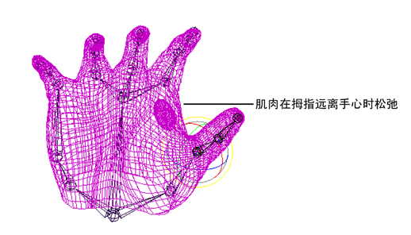

为动画设置手是角色设置要求最高的一个方面。使用平滑蒙皮，可以使用由邻近的关节驱动其操作的影响对象来实现更细微的效果。
将拇指移向您的食指时，沿手上部一侧的肌肉（骨间背侧肌）往往会外凸，指示手的张力。在刚性蒙皮中，您可以使用屈肌提供凸起效果，但在屈肌上准确定位肌肉凸起的位置会比较复杂。通过平滑蒙皮，您可以使用影响对象提供变形。
创建手部骨架和平滑蒙皮
假设您为手创建一个模型。手由 NURBS 曲面构成，包括指尖、拇指和手掌区域的曲面。假设您还为手创建骨架，并刚刚通过平滑蒙皮将 NURBS 曲面绑定到骨架。
现在可以设置影响对象来创建手肌肉凸起，方法是创建多边形球体，设置球体作为影响对象，然后将球体的缩放链接到骨架拇指的移动。
设置影响对象
创建多边形球体来模拟肌肉凸起
- 创建一个多边形球体，调整比例属性以接近于肌肉形状（例如，将“缩放 X”(Scale X)设定为 1.5，“缩放 Y”(Scale Y)设定为 0.7，“缩放 Z”(Scale Z)设定为 0.7）。
- 在手内部及拇指和食指之间定位球体。
添加多边形曲面作为影响对象
- 选择手掌蒙皮对象。（这是平滑蒙皮的 NURBS 曲面，球体将对该曲面变形。）
- 选择球体。
- 选择蒙皮 > 编辑平滑蒙皮 > 添加影响(Skin > Edit Smooth Skin > Add Influence)。
将凸起链接到拳头构成部分
现在，将拇指关节的旋转链接到影响对象（多边形球体）的缩放。
- 打开“设置受驱动关键帧”(Set Driven Key)窗口（“关键帧 > 设置受驱动关键帧 > 设置”(Key > Set Driven Key > Set)）。
- 加载 thumb1（拇指关节）作为驱动者，选择“旋转 Z”(rotate Z)属性，并将该属性设定为 0。
- 加载 pSphere1（影响对象）作为驱动者，选择“缩放 Y”(scale Y)和“缩放 Z”(scale Z)属性。（将“缩放 Y”(scale Y)和“缩放 Z”(scale Z)保留为 0.7。）
- 单击“关键帧”(Key)。
- 将 thumb1 的“旋转 Z”(rotate Z)属性设定为 -40。
- 将 pSphere1 的“缩放 Y”(scale Y)属性设定为 0.8。
- 将 pSphere1 的“缩放 Z”(scale Z)属性设定为 1。
- 单击“关键帧”(Key)。
- 单击“关闭”(Close)，关闭该编辑器。
测试变形
现在，当拇指定位在远离手掌的位置时，肌肉会显示松弛。

但是，在旋转拇指使其靠近手掌时，曲面会凸起以模拟肌肉的动作。